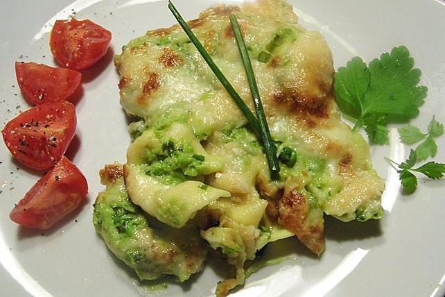

Taco-Salat
Taco-Salat ist ein beliebtes Gericht der texanischen Küche, das aus einer Mischung von gewürztem Hackfleisch, knusprigen Tortilla-Chips, frischem Gemüse wie Salat, Tomaten und Avocado sowie Käse und einem Dressing besteht. Es ist ein vielseitiges und sättigendes Gericht, das oft mit mexikanischen Aromen und Gewürzen zubereitet wird und eine Kombination aus Geschmack und Textur bietet.
Lust auf was neues?
Italienische Lasagne
 Frische Croissant
Frische Croissant

Tortellini Auflauf
Pfanne vs. Wok - Was ist besser?
Die Wahl zwischen einer Pfanne und einem Wok hängt von den persönlichen Vorlieben und dem gewünschten Kochstil ab. Eine Pfanne ist vielseitig einsetzbar und eignet sich gut für eine Vielzahl von Gerichten, während ein Wok besonders gut für das schnelle und heiße Rühren von asiatischen Gerichten geeignet ist. Beide haben ihre Vorzüge, und die Entscheidung hängt letztendlich von den individuellen Kochbedürfnissen und -präferenzen ab.